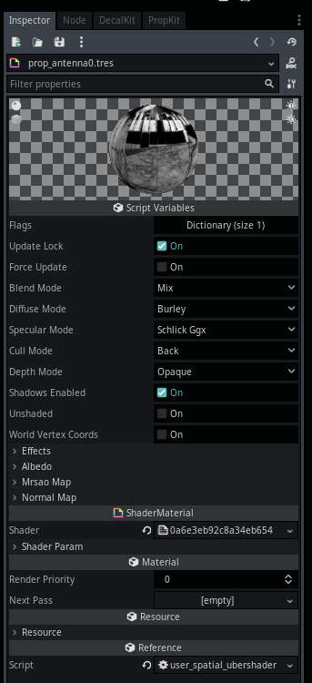
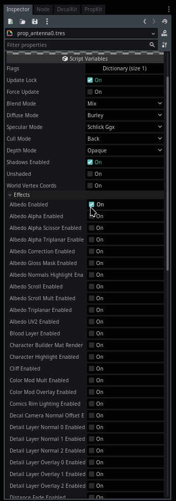

Module: spatial_ubershader
Documentation last edited: October 23, 2025 at 14:33 UTC
Description
Так, значит...
SpatialMaterial
. Звучит как план. Звучит как ВСЁ, что тебе когда-либо могло понадобиться от материала в 3D. Ага. Звучит здорово. Звучит правдоподобно. Но что происходит, когда ты используешь свой гигамозг, чтобы добавить дополнительный шейдерный эффект? О нет, всё разваливается! Тебе приходится использовать
ShaderMaterial
, чтобы сделать свои собственные эффекты! А что, если ты захочешь переиспользовать что-то, что было в
SpatialMaterial
? Ну, чувак, просто скопипасть это или что-то в этом роде, нам всё равно. Я был немного зол, поэтому сделал ультимативную систему управления спагетти, угадай, что это? Правильно, это тот самый модуль.
"Ubershader"
— такое умное слово, но на самом деле всё сводится к автоматизации копипастинга шейдерного кода. Тебе больше не нужно выполнять эту 5-минутную задачу, я потратил целую вечность, шлифуя эту автоматизированную хрень. Используй её. Пожалуйста. Я умоляю. На самом деле, это не имеет значения, все материалы в этом проекте ЯВЛЯЮТСЯ
UserSpatialUbershader
, так что ты испытаешь приличный прессинг со стороны этого проекта, чтобы использовать именно этот :)
В этом модуле есть два класса, о которых тебе действительно нужно знать:
SpatialUbershader
и
UserSpatialUbershader
.
SpatialUbershader
— это основная логика этого модуля. Это ультимативный бомбический комбайнер спагетти, миксер, менеджер, чем бы он ни был. Однако, этот класс сам по себе не предоставляет user-friendly интерфейс, и из-за того, как работает Godot... Что ж, скажем так, я был вынужден сделать
UserSpatialUbershader
.
Этот класс НЕ написан вручную.
Он предоставляет export переменные и всю эту прикольную хрень, но писать его вручную было бы самоубийством. Именно поэтому существует
"res://modules/spatial_ubershader/assets/code_generation_scene/code_generator.gd"
, редакторский скрипт, который ты можешь запустить, чтобы обновить код в
UserSpatialUbershader
. Другими словами,
UserSpatialUbershader
- это просто более прикольный фасад для
SpatialUbershader
, ебучий мейкап, если хочешь. Прячет уродливое лицо. Мы все любим прикольную ложь, не так ли?
Использование материала, находясь в окопах


Что тебе нужно понять об этом материале, так это то, что он может иметь несколько эффектов. Даже "albedo" текстура - тоже эффект. Ты просто включаешь нужные тебе эффекты, и когда закончишь: Жми
"Force Update"
, это обновит шейдерный код и параметры, которые ты можешь настраивать. Каждый эффект имеет свою собственную назначенную группу, которую ты можешь расширять и назначать нужные значения/текстуры. Проще некуда.
Как сделать свой собственный крутой эффект
Слушай сюда, сынок, это очень сложная и пугающая задача... Она требует много терпения... На самом деле, кого я обманываю? Загляни в
"res://modules/spatial_ubershader/assets/effects/"
, пролистай эффекты, обрати внимание на паттерны, которые встречаются повсюду. Этот проект очень заточен под паттерны, знаешь ли? Давай взглянем на наш любимый эффект
"albedo"
.
.
└── albedo
├── config.tres
└── shader.tres
Все твои фанковые-шманковые шейдерные эффекты ДОЛЖНЫ иметь два файла:
"config.tres"
и
"shader.tres"
.
"config.tres"
— это просто
SpatialUbershaderEffectConfig
ЧЁРТ, ЭТО НАЗВАНИЕ КЛАССА УБИВАЕТ МЕНЯ ох, извини, я хотел сказать, что это конфиг для твоего эффекта, который в основном полезен для настройки его приоритета порядка, все эффекты обрабатываются в своего рода очереди.
"shader.tres"
- это шейдерный код для твоего spatial шейдерного эффекта.
Шейдеры в данном случае - это не просто "шейдеры", у них есть некий мета-обработчик, о котором тебе нужно знать. Давай возьмём наш любимый альбедо-шейдер в качестве примера:
shader_type spatial; //__IGNORE_LINE__
// Входная текстура альбедо
//__ADD_PROPERTY::effect_tex::TEXTURE
uniform sampler2D effect_tex: hint_albedo;
// Множитель цветового оттенка
//__ADD_PROPERTY::effect_color::COLOR
uniform vec4 effect_color: hint_color;
// Блок корректировки UV
// __ADD_FLAG::effect_uv_tweak
// __FLAG::effect_uv_tweak
// Горизонтальный масштаб текстуры
//__ADD_PROPERTY::effect_UV_scale_x::FLOAT
uniform float effect_UV_scale_x = 1.0;
// Вертикальный масштаб текстуры
//__ADD_PROPERTY::effect_UV_scale_y::FLOAT
uniform float effect_UV_scale_y = 1.0;
// Горизонтальное смещение текстуры
//__ADD_PROPERTY::effect_UV_offset_x::FLOAT
uniform float effect_UV_offset_x = 0.0;
// Вертикальное смещение текстуры
//__ADD_PROPERTY::effect_UV_offset_y::FLOAT
uniform float effect_UV_offset_y = 0.0;
// __FLAG_END
//__FRAGMENT_SPLIT__
void fragment()
{ //__IGNORE_LINE__
// Базовые UV-координаты
vec2 effect_uv = UV;
// Блок корректировки UV (включается conditionally)
// __FLAG::effect_uv_tweak
effect_uv.x *= effect_UV_scale_x; // Применяем горизонтальный масштаб
effect_uv.y *= effect_UV_scale_y; // Применяем вертикальный масштаб
effect_uv.x += effect_UV_offset_x; // Применяем горизонтальное смещение
effect_uv.y += effect_UV_offset_y; // Применяем вертикальное смещение
// __FLAG_END
// Сэмплируем текстуру и применяем цветовой оттенок
vec4 effect_tex_color = texture(effect_tex, effect_uv);
ALBEDO = effect_tex_color.rgb * effect_color.rgb;
}
//__IGNORE_LINE__
Итак, ты мог заметить некоторые комментарии, которые не очень-то похожи на человеческие. Звучит так, будто машина взбунтовалась и собирается тебя убить. Что ж, это то, что я называю мета-обработкой, ага. Эти комментарии должны дать
SpatialUbershader
понять, что, чёрт возьми, он должен делать с твоим чёртовым кодом. Если ты просто скормишь ему шейдер без всего этого - он примет ислам и откажется иметь с тобой дело, неверный. Скорее всего, это приведёт к сломанному сгенерированному шейдерному коду, который не будет делать ничего ценного. К счастью для тебя, я здесь, чтобы помочь, пока троллю твою задницу. Вот список твоих чёртовых комментариев, которые ты ДОЛЖЕН ЗНАТЬ И ПОМНИТЬ К КОНЦУ ПРОЧТЕНИЯ.
Вместо "name" может быть что угодно, убедись, что звёзды сошлись.
//__IGNORE_LINE__
Игнорирует строку. То есть... Вау, неожиданно? Окей, тебе нужно поставить этого ублюдка в строках с "shader_type" и определениями "void fragment()", "void vertex()" и "void light()", а также их скобками. Иначе система сломается. Жёстко.
//__ADD_PROPERTY::name::TEXTURE
Регистрирует uniform переменную как текстуру.
//__ADD_PROPERTY::name::COLOR
Регистрирует uniform переменную как цвет.
//__ADD_PROPERTY::name::FLOAT
Регистрирует uniform переменную как float.
Чёрт, эти три так просты, разве не удивительно?
//__VERTEX_SPLIT__
Говорит чёртовой машине, что следующая функция будет vertex, и что код принадлежит туда.
//__FRAGMENT_SPLIT__
Говорит чёртовой машине, что следующая функция будет fragment.
//__LIGHT_SPLIT__
Говорит чёртовой машине, что следующая функция будет light.
// __ADD_FLAG::name
Добавляет новый флаг для обработки ubershader'ом.
// __FLAG::name
Говорит чёртовой машине, что следующие строки кода могут быть добавлены в результирующий шейдер только если флаг активен.
// __FLAG_END
Говорит чёртовой машине, что обработка флага закончена, так что она может продолжать делать своё дерьмо как обычно.
Если ты всё ещё чувствуешь себя сбитым с толку, я предлагаю тебе сделать две вещи:
- Взгляни на существующие эффекты, этот след трупов действительно может тебя многому научить.
- Для получения дополнительной информации, пожалуйста, перечитай.
Веселись.
General Information
Root directories list
assets, docs, src
Nodes
SpatialUbershader
SpatialUbershaderShaders